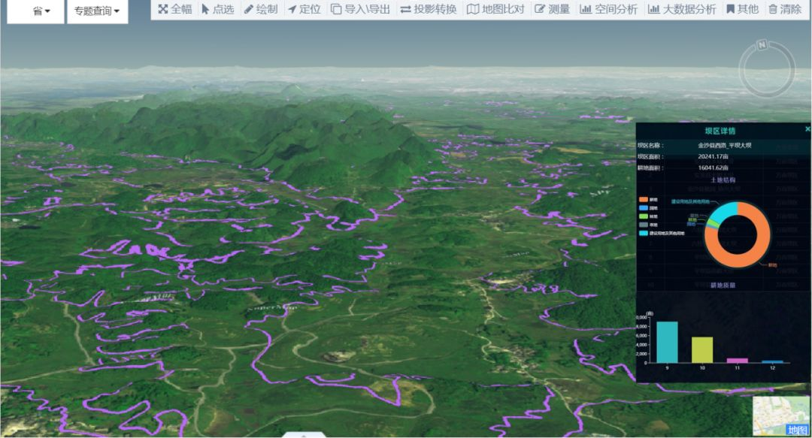
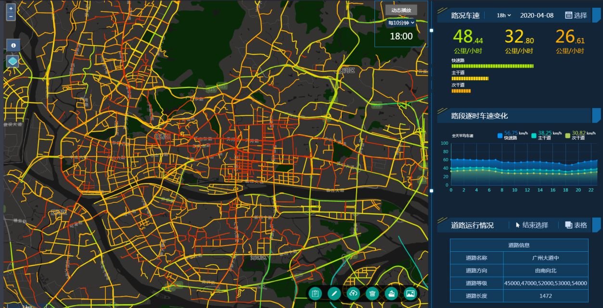

为您提供高质量的地理信息系统服务，助力企业数字化转型
提供专业的空间数据采集服务，包括遥感影像处理、GPS测量等，确保数据的准确性和完整性。
根据客户需求，开发定制化的GIS系统，实现空间数据的管理、分析和可视化。
开发基于Web的地理信息系统应用，实现地图的在线浏览、查询和分析功能。
提供遥感影像的处理、解译和分析服务，为决策提供科学依据。
运用专业的空间分析工具，对地理数据进行深度分析，提取有价值的信息。
提供GIS技术培训服务，帮助企业和个人掌握地理信息系统的使用和开发技能。
为某城市规划局开发的GIS系统，实现了城市规划数据的管理和分析。

为某环保局开发的环境监测GIS系统，实现了环境数据的实时监测和分析。

为某交通局开发的交通管理GIS系统，实现了交通数据的管理和分析。